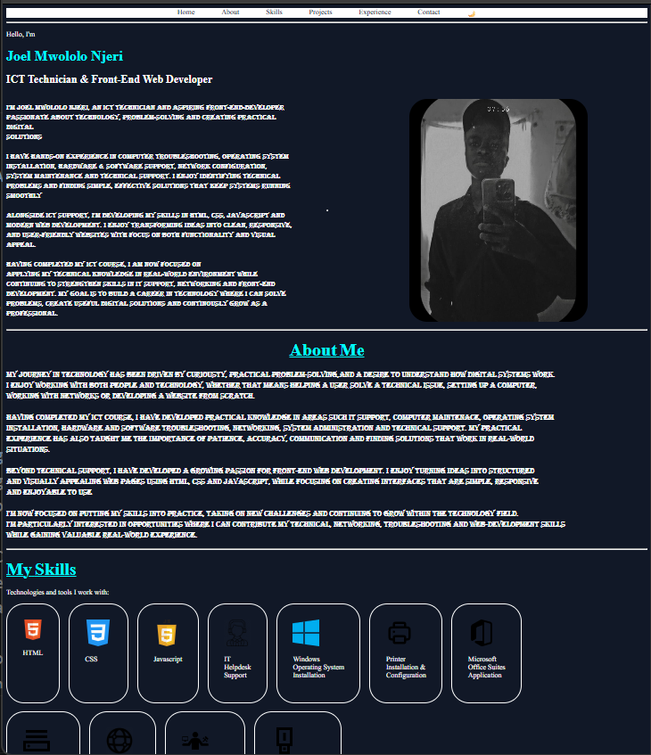
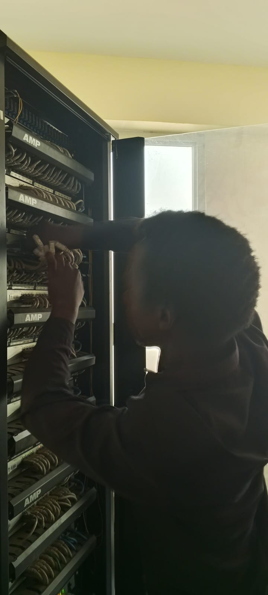
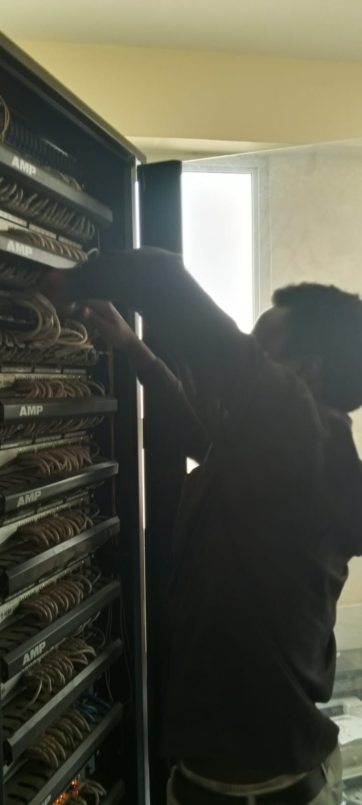

HTML

CSS
Javascript

IT
Helpdesk
Support
Windows
Operating System
Installation
Printer
Installation &
Configuration
Microsoft
Office Suites
Application
Switch/Router
Configuration

Networking

Hardware
&
Software
Troubleshooting
Computer's drivers
Installation
My
Projects
Some of the Projects I've worked on:

Personal Portfolio Website
Designed and Developed a responsive
personal portfolio website using HTML,
CSS, Javascript to showcase my skills,
experience, Education and Projects.
The website focuses on clean design,
easy navigation and a professional
online presence.

Network Configuration
Configured and tested Computer
network by setting up IP
Addresses, network connections,
gateways and basic network
Services
This project strengthened my
understanding of network configuration
and troubleshooting

Network Troubleshooting & Maintenance
Practiced identifying and resolving
common network connectivity problems
including connection failures, IP
configuration issues and communication
errors.
The project focused on systematic
troubleshooting and maintaining reliable
network connectivity.
Experience & Education
ICT Technician Lv IV
- Completed
Secondary Education
- Completed
Primary Education
- Completed
Education
- Anti-virus Software updates
- HelpDesk Support
- Hardware & Software Support
- Networking (TCP & IP, DNS,Cable Termination etc)
- Printer Configuration
- Windows OS Installation
- Office Suites application
- Switch Configuration
Experience
ICT Attachment
MKU (May 2026 - Aug 2026)
For more INFORMATION
Get in touch with me via;
mwololojoel05@gmail.com
Location
Thika, Kenya